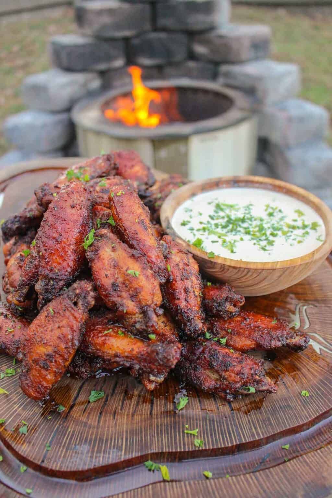
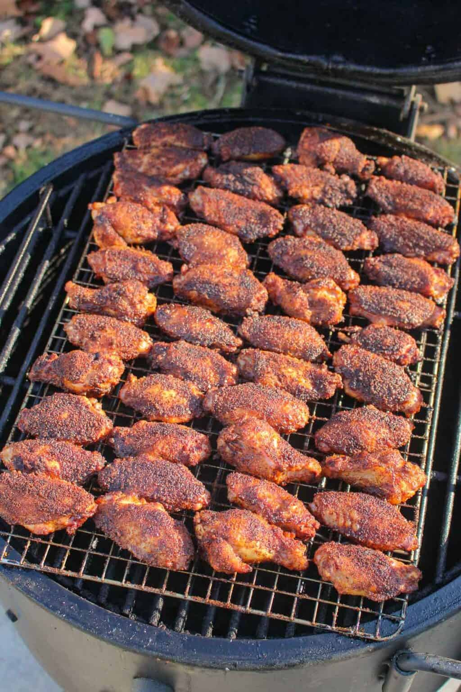
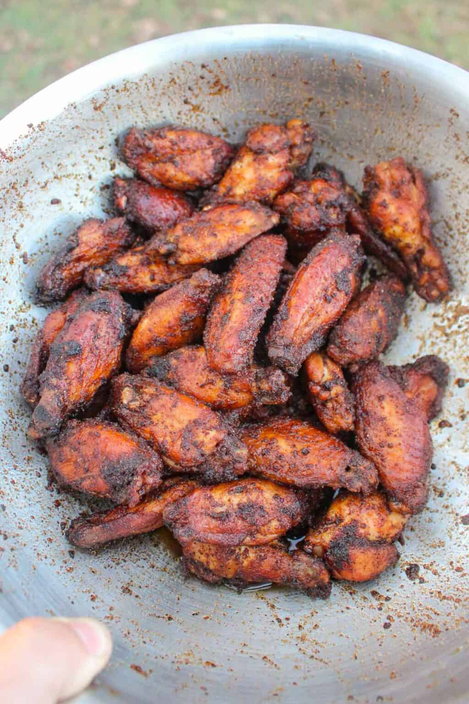

HOT CHICKEN WINGS

These delicious hotwings will send you on your way to Vanhalla!!
Ingredients
For the chicken, we are goning to need
- Chicken Wings
- Hot Seasoning
- Frying Oil
- Chooped Parsley
For the Brine, we will need
We will also make a white sauce
- Mayonaise
- White Vinegar
- Perepared horse Radish
- Brown Sugar
- Lemon
- Cayenne powder
- Black Pepper
- Kosher Salt
Directions
Prep the Chicken
- Begin by adding your pickle brine and white sugar to a large bowl. Stir until the sugar has completely dissolved, then add your chicken wings to the bowl. Cover and place in the fridge for at least 4 hours, ideally overnight.
- discard the excess brine and pat your chicken wings dry. Season generously with ¾ cup of my Hot Seasoning. Set chicken aside until ready to use. In the meantime we move onto the sauce.
- Put all the White Sauce ingredients to a small bowl and mix. Set in the fridge until ready to use.
- Preheat your appliance, in this case i will use a smoker, preheat to 250f. Add your chicken wings to the smoker and cook for about 1.5-2 hours. Once done let them rest for 2-3 minutes.

- Add your crispy chicken wings to a tossing bowl. Cover the wings in the oil and spice mixture and toss thoroughly. Serve with white sauce and garnish with pasrsley and chikcen.
